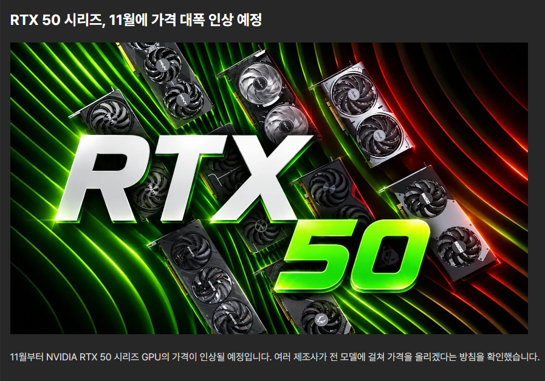
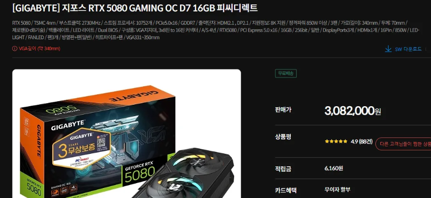
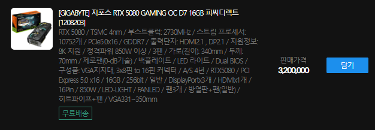

- RTX 5080 : +$380~$450
- RTX 5070 Ti : +$150
- RTX 5070 : +$90~$135
- RTX 5060 Ti 16G : +$37~$60
- RTX 5060 Ti 8G : +$15~$22
- RTX 5060 8G : +$22~$30
일단 컬러풀에서 나온 가격인상폭은 저정도임 max값은 하이엔드 OC모델 기준인듯
홍콩쪽 AIB회사들은 전부 저정도 인상할듯하고, 대만쪽 므시,긱바,아수스도 마찬가지일듯
한국유통사 측도 일제히 가격인상을 시작했음...

어제 재고 풀리고 바로 솔드아웃된 긱바 5080 겜오씨 가격이 308.2 였는데

오늘 11.8만원 올려서 320만원으로 물건 다시올림 ㅋㅋㅋ....
개붕이가 컴퓨터부품본지 꽤됬는데, 비트코인때도 이지랄은 안났는데 이제 모르겠다 ㅠㅠ
한줄요약 : 그래픽카드(싯가)
4070티슈를 130에 샀던 그때가 꿈만같다